Focus & Fish
スマホをやめれば魚が育つ
アプリに登場する生き物は、すべてアクリル絵の具や色鉛筆で描いた手描きイラストをもとに制作しています。生き物の種類は30種類以上。以下はその一部です。これらの生き物がアプリの中で生き生きと動き回っています。
Every creature in the app is based on hand-drawn illustrations made with acrylic paints and colored pencils. There are more than 30 species — here are some of them, all swimming and moving lively inside the app.
手描きの生き物たち
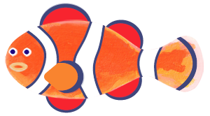
カクレクマノミClown Anemonefish
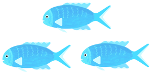
デバスズメダイBlue-green Chromis
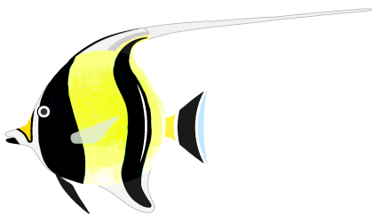
ツノダシMoorish Idol
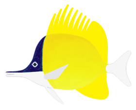
フエヤッコダイForcepsfish
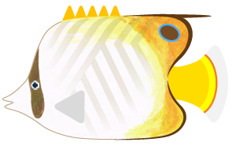
トゲチョウチョウウオThreadfin Butterflyfish
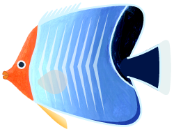
オレンジフェイス・Orange-face Butterflyfish
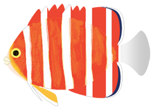
ペパーミントエンゼルPeppermint Angelfish
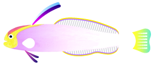
シコンハタタテハゼPurple Firefish
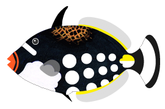
モンガラカワハギClown Triggerfish
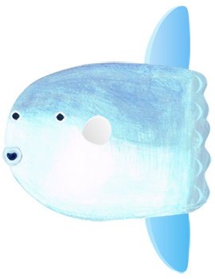
マンボウOcean Sunfish
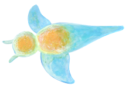
クリオネSea Angel
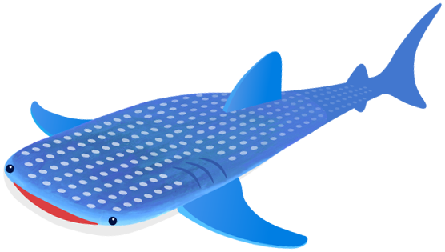
ジンベエザメWhale Shark
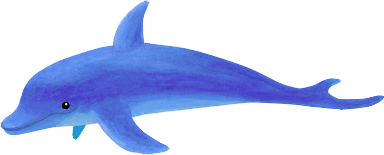
イルカDolphin
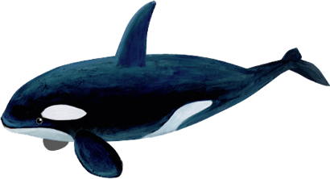
シャチOrca
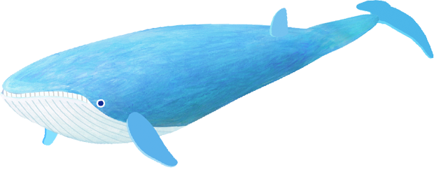
シロナガスクジラBlue Whale
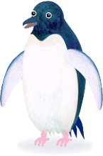
アデリーペンギンAdélie Penguin
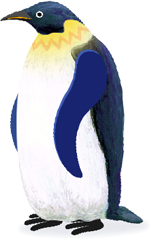
コウテイペンギンEmperor Penguin
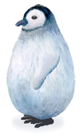
コウテイペンギンEmperor Penguin Chick
新機能「魔法の水槽」
New Feature: The Magic Aquarium